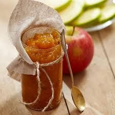
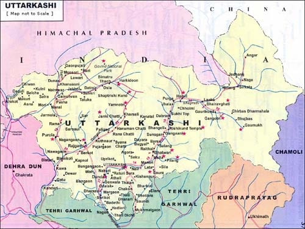

Apple Jam from Uttarkashi is a delicious preserve made from the juicy and sweet apples cultivated in the high-altitude orchards of the district. Due to the region’s favorable climate, apples grown here are known for their crisp texture, natural sweetness, and rich aroma. This jam is handcrafted using traditional recipes and pure ingredients—ripe apples, cane sugar, lemon juice, and no artificial preservatives. The result is a rich, fruity spread that’s perfect on toast, pancakes, or even as a natural sweetener in desserts.
What makes Uttarkashi’s Apple Jam special is the authenticity of its flavor, which reflects the purity of the Himalayan soil and water. It is not just a condiment but a wholesome product packed with nutrients like dietary fiber, vitamin C, and antioxidants. Often made in small batches by local women entrepreneurs and cooperatives, this jam is slowly gaining popularity in urban markets as a premium organic product.
Apple cultivation in Uttarkashi has a long-standing tradition that dates back to British colonial times when high-altitude orchards were introduced to the region. Today, the Harsil Valley is one of the most prominent apple-growing areas in Uttarakhand. The local communities have mastered the art of making jams, chutneys, and preserves using fresh apples, and this practice has become a vital source of income.
The use of traditional jam-making methods—such as slow cooking in copper vessels and sun-drying apple peels for added flavor—reflects the cultural depth of the region. Many families in Uttarkashi still prepare jams at home during the harvest season as part of their winter food preparation, maintaining both the tradition and nutritional values.
For purchase and wholesale information, you can reach out to the Uttarkashi Apple Growers Cooperative at 7819936132 , 9411380790 or email at info@harsilapple.com. Products are available at local markets in Uttarkashi, such as Harsil Market and Joshiyara Bazaar, and online at https://harsilapple.com/single-item?Item=Apple+Jam&id=1&utm_source=chatgpt.com.

- Uttarkashi apples are so prized that they are sent directly to the President’s Estate in New Delhi each year.
- The Harsil Valley, located in Uttarkashi, is often called the “Apple Bowl of Uttarakhand.”
- Apple Jam-making competitions are held during the local harvest festival, drawing tourists and food enthusiasts.
- Many of the jam makers still use wood-fired stoves to retain the authentic flavor in every jar.